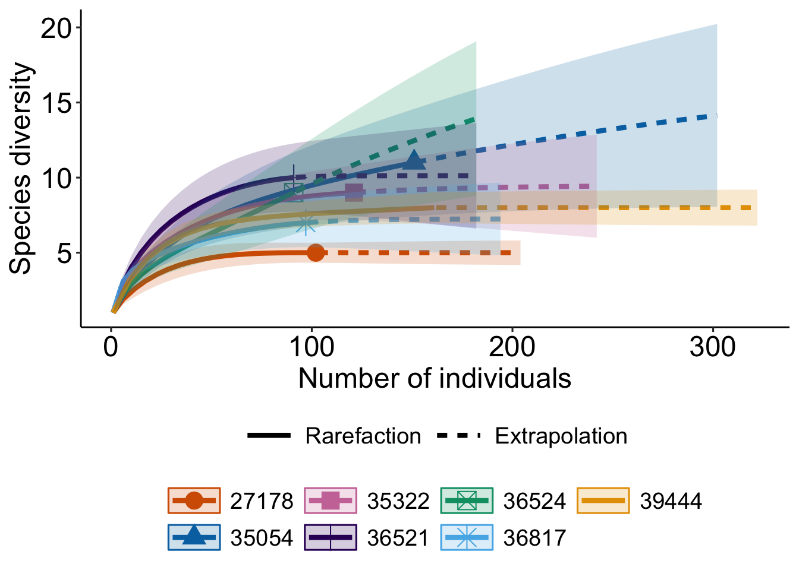
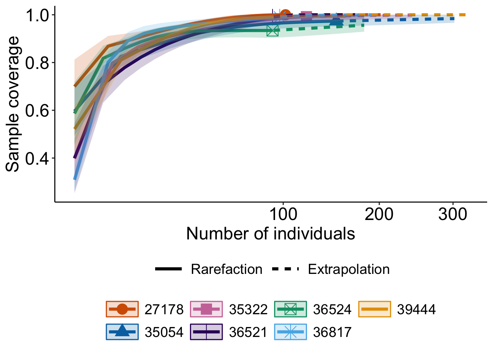
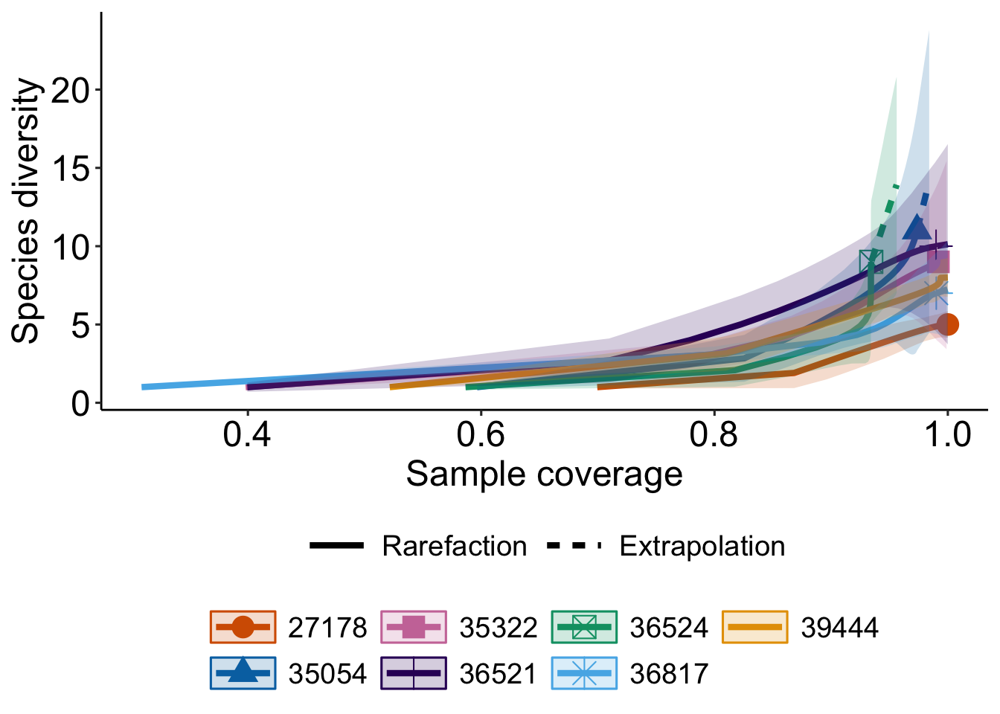
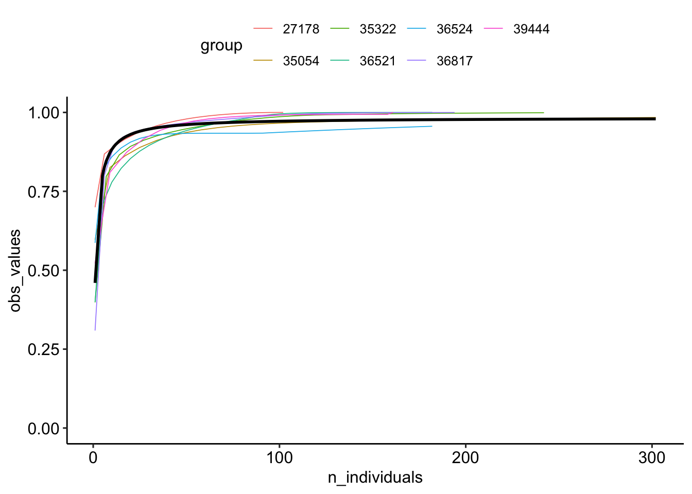

This is an approach to develop an index of sampling priority (Biodiversity Coverage Index?), which is derived from applying a general, predicted accumulation curve based on well-sampled cells in a region of interest.
Set up
library(tidyverse)library(sf)library(terra)library(iNEXT)library(drc)library(mapview)library(dplyr)# set plotting optionstheme_set(ggpubr::theme_pubr())
Warning: The `size` argument of `element_line()` is deprecated as of ggplot2 3.4.0.
ℹ Please use the `linewidth` argument instead.
ℹ The deprecated feature was likely used in the ggpubr package.
Please report the issue at <https://github.com/kassambara/ggpubr/issues>.
Warning: The `size` argument of `element_rect()` is deprecated as of ggplot2 3.4.0.
ℹ Please use the `linewidth` argument instead.
ℹ The deprecated feature was likely used in the ggpubr package.
Please report the issue at <https://github.com/kassambara/ggpubr/issues>.
# set global mapview optionsmapview::mapviewOptions(na.color ="transparent",raster.palette = viridis::turbo,basemaps ="CartoDB.Positron")
This is an example based on data from iNaturalist Canada in BC Parks. I subset to Amphibians to keep the data light, but we can run this for other groups too.
# read outputed data files from calculate-cellwise-scores.Robs =readRDS(here::here("outputs/inatobs_amphibians_bcparks.rds"))map_obsdens =readRDS(here::here("outputs/inatdensity_amphibians_bcparks.rds"))parks5k =rast(here::here("outputs/spatial-layers/parks5k.tif"))# reproject parks parks5k =project(parks5k, crs(map_obsdens))parks5k =trim(parks5k)
Step 1. Select “well-sampled” cells
Histogram of the cell-wise observation density:
hist(map_obsdens)
We’ll define some (here, kind of arbitrary) threshold to find “well sampled” cells
# (NA = not selected as well sampled)obs_sel = terra::extract(sampled_well, obs, cell =TRUE) # clean up the data obs_df = obsobs_df$selected =!is.na(obs_sel$V1_length)obs_df$group = obs_sel$cell |>as.character()# convert to sfobs_sf =st_as_sf(obs_df)
Step 2. Estimate sample coverage curve from the selected cells
Subsetting and preparing data for the rarefaction estimation
# subset data to the selected cellsdf = obs_sf |>filter(selected ==TRUE) |> dplyr::select(c(group, scientific_name)) |>group_by(group, scientific_name) |>summarise(n =n()) |> sf::st_drop_geometry()
`summarise()` has grouped output by 'group'. You can override using the
`.groups` argument.
# prep data for iNEXTgroups =unique(df$group)# there are nicer ways to do this but whatever! for now :)occ =list()for(i in1:length(groups)){ df2 = df |>filter(group == groups[i]) occ[[i]] = df2$n |>sort(decreasing =TRUE)}names(occ) = groups
Now, we rarefy for each cell (assemblage)
out_cell =iNEXT(occ, q =0, datatype ="abundance")# plot the curvesggiNEXT(out_cell)
Warning: `aes_string()` was deprecated in ggplot2 3.0.0.
ℹ Please use tidy evaluation idioms with `aes()`.
ℹ See also `vignette("ggplot2-in-packages")` for more information.
ℹ The deprecated feature was likely used in the iNEXT package.
Please report the issue at <https://github.com/JohnsonHsieh/iNEXT/issues>.
Warning: The shape palette can deal with a maximum of 6 discrete values because more
than 6 becomes difficult to discriminate
ℹ you have requested 7 values. Consider specifying shapes manually if you need
that many of them.
Warning: Removed 1 row containing missing values or values outside the scale range
(`geom_point()`).

ggiNEXT(out_cell, type =2) +scale_x_sqrt()
Warning: The shape palette can deal with a maximum of 6 discrete values because more
than 6 becomes difficult to discriminate
ℹ you have requested 7 values. Consider specifying shapes manually if you need
that many of them.
Removed 1 row containing missing values or values outside the scale range
(`geom_point()`).

ggiNEXT(out_cell, type =3)
Warning: The shape palette can deal with a maximum of 6 discrete values because more
than 6 becomes difficult to discriminate
ℹ you have requested 7 values. Consider specifying shapes manually if you need
that many of them.
Removed 1 row containing missing values or values outside the scale range
(`geom_point()`).

Step 3. Model a general coverage curve
Now we’ll use these curves to model a generalisable information accumulation curve from the well-sampled cells. Then we can predict from this cell to get an index of coverage for poorly sampled cells… (we still need to compare this with some poorly-sampled cell curves to check how well this works though)
# make a dataframe with the outputs we needmdf =data.frame("coverage"= out_cell$iNextEst$coverage_based$SC, # standardized sample coverage"n_individuals"= out_cell$iNextEst$coverage_based$m, # sample size "diversity"= out_cell$iNextEst$coverage_based$qD,"group"= out_cell$iNextEst$coverage_based$Assemblage)# plot in a prettier style for savingggplot(data = mdf) +geom_line(aes(x = n_individuals, y = coverage, col = group)) +theme(legend.position ="right") +labs(x ="Number of individuals", y ="Sample coverage", col ="Cell") + hrbrthemes::theme_ipsum_es()
Let’s fit a model to these curves. I used a dose-response model which works well for data that increases quickly and tapers off at an asymptote (=1). Michaelis-Menten could also work here though…
m <- drc::drm(coverage ~ n_individuals, fct =MM.2(), data = mdf)summary(m)
# predict the model (fitted values)pred =predict(m, type ="response")predvar =predict(m, type ="variance")plot_df =data.frame("group"= mdf$group,"n_individuals"= mdf$n_individuals,"obs_values"= mdf$coverage,"fitted_values"= pred,"fitted_var"= predvar)ggplot(data = plot_df,aes(x = n_individuals)) +geom_line(aes(y = obs_values, col = group), linewidth = .3) +geom_line(aes(y = fitted_values), linewidth =1) +coord_cartesian(ylim =c(0,1))

Step 4. Estimate sample coverage for the remaining cells
# predicted coverage = completeness metric (I think?)completeness =data.frame("cellID"=cells(map_obsdens),"density"=na.omit(values(map_obsdens)) |>as.vector(),"coverage"=NA)# predict coverage per cellpreds =predict(m, type ="response", data.frame("n_individuals"= completeness$density))# join the the tablecompleteness$coverage = preds